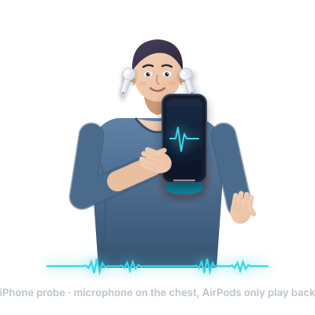
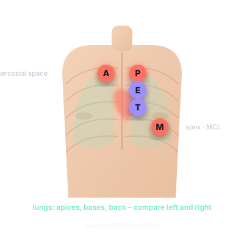
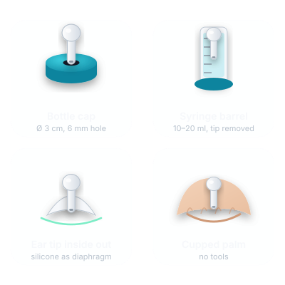

How Ausculta works
A short description of what happens to the sound from the microphone to the headphones. Ausculta is an educational aid: it amplifies, filters and displays sound. It measures nothing and assesses nothing.
From microphone to headphones
Capture
The main probe is the iPhone: the bottom microphone at full quality (48 kHz), without voice processing. The AirPod probe is offered only where iOS provides a high-quality microphone link (iOS 26, AirPods Pro 2 / Pro 3, AirPods 4, outside the EU).
Band filter
The bell passes the 20–220 Hz band (low sounds), the diaphragm the 100–1200 Hz band (higher sounds). The filter emphasises what one learns to hear when listening and suppresses the rest.
Amplification
Automatic or manual gain evens out a weak signal. A limiter in the gain stage protects your ears from sudden bumps.
Noise reduction
After calibration in silence, Ausculta subtracts the ambient noise and dampens bumps caused by probe movement.
Display
The sound waveform and frequency spectrum in real time. They are pictures of sound, as in audio editing software, not health values.
Listening and recordings
You hear the processed sound in your headphones. Recordings are saved as WAV with the listening site and a note, and you can play back and share them any time.
Interference alerts
Ausculta reports when the sound is disturbed by probe movement, hand tremor, speech, room noise or poor contact with the skin. These are messages about sound quality, so you know to hold the probe more steadily or press it better. They say nothing about your health.
What Ausculta does not do
Ausculta shows no health values, does not recognise or name sounds, produces no diagnoses and gives no recommendations. It is not a medical device, it measures nothing, does not diagnose and does not replace an examination by a doctor. You compare what you hear yourself, for example with textbook examples. Always consult a doctor about health concerns.
Probe and listening sites

iPhone probe

Listening sites
